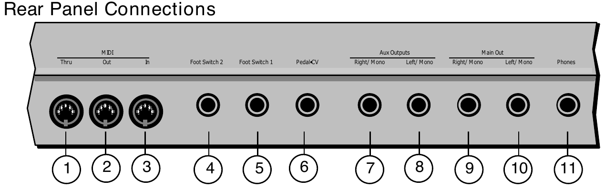
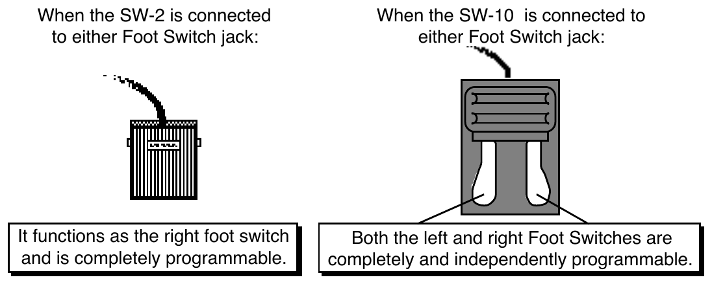
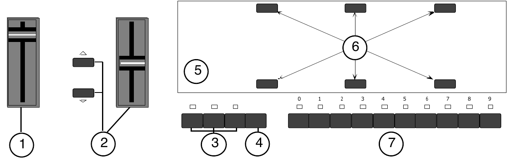
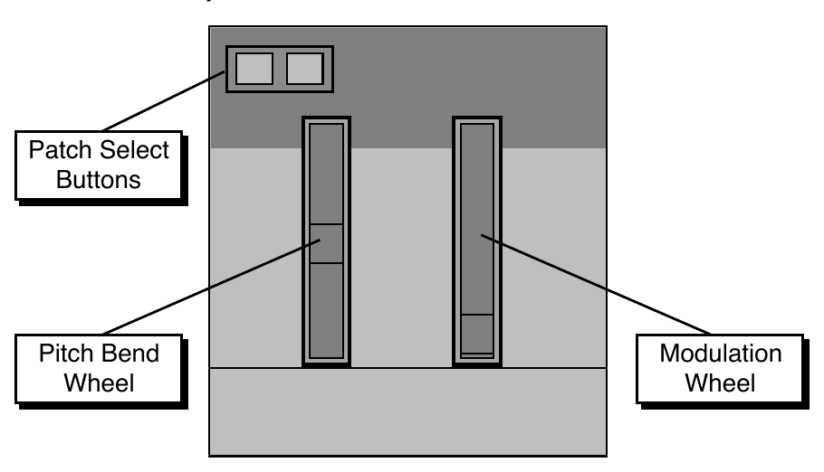

Performance / Composition Synthesizer · Version 3.0
Section 1 — Controls & Basic Functions
This section provides an introduction to the TS-10’s many controls and rear panel connections, a conceptual overview of the system, and a discussion of editing various types of parameters. We suggest you read this section carefully — it will help you get the most out of your TS-10.
Rear Panel Connections

1) MIDI Thru
“Passes on” all MIDI (Musical Instrument Digital Interface) information received by the TS-10 to other MIDI devices. Information generated by the TS-10 itself does not go to this jack — the Thru jack merely echoes what comes into the MIDI In jack.
2) MIDI Out
Sends out MIDI information generated by the TS-10 keyboard and/or sequencer to other instruments and computers.
3) MIDI In
This jack receives
MIDI information from other
MIDI instruments or computers.
4) Foot Switch 2
5) Foot Switch 1
These two independent foot switch jacks support either a single (mono) or dual (stereo) foot switch, and can be assigned to a number of different functions, allowing a total of four independent foot switch controllers (when two optional SW-10 Dual Foot Switches are connected).
When either type of foot switch is plugged into the Foot Switch 1 or 2 jack, it is completely programmable (on the System page), and can be used for sustain, sostenuto, Patch Select control, preset up/down, effect modulation, or sequencer control.

There are four parameters on the System page that let you assign the foot switches to a variety of functions. When a single foot switch is connected, set the left foot switch to *UNUSED* on the System sub-page. For more information about assigning the foot switches, refer to Section 2 — System Page Parameters.
6) Pedal•CV
This jack is for connecting an optional ENSONIQ Model CVP-1 Control Voltage Foot Pedal, which is assignable as a modulator to various parameters within the TS-10. The pedal gives you a handy alternative modulation source when, for example, you would want to use the Mod
Wheel but both hands are busy.
A
CV pedal plugged into this jack can also act a volume pedal, CVP-1 controlling the volume of the currently selected sound(s). A Control Voltage Foot Pedal parameter on the System page (press System, then underline PEDAL=VOL/MOD), determines whether the
CV pedal will act as a modulator or as a volume pedal. Set to PEDAL=
VOL to use the
CV pedal to control volume.
Pedal/CV Specs: 3-conductor (Tip= control voltage input, Ring=510 ohm resistor to +5 Volts, Sleeve= ground). 36 KOhm input impedance, DC coupled. Input voltage range=0 to 3 volts DC. Scan rate=32mS (maximum recommended modulation input= 15 Hz). For use with an external control voltage, use a 2-conductor cable with the voltage on the tip and the sleeve grounded.
7) AUX Out Right/Mono
8) AUX Out Left/Mono
The AUX Outputs provide an additional stereo output for use in mixing down sequences, etc.
The AUX Outputs contain the dry (no effects) signal only, allowing you to process and mix certain sounds separately. TS-10 sounds can be routed to the AUX Outputs from the Track Effects page, or individual voices can be set to the AUX Outputs from the Output page. When using the AUX Outputs in stereo, connect these outputs to two separate channels of your mixer and pan them left and right. If you want to have a mono AUX Output, make sure that only one of the AUX Out jacks is connected.
9) Main Out — Right/Mono
10) Main Out — Left/Mono
The Main Out jacks contain the wet (effected) output of the TS-10’s effects processor. Any sounds or individual voices routed to FX1, FX2, or DRY will be routed to the Main Outs. To operate the TS-10 in stereo, connect these outputs to two discrete channels of your mixer and pan them left and right. Note that either of the Main Outs can be used as a mono output. If you want to listen to the main output in mono, make sure that only one of the Main Out jacks is connected.
11) Phones
To listen to the TS-10 in stereo through headphones, plug the phones into this jack. The Phones output contains a mix of the signal from the Main Outputs and the AUX Outputs. Headphone volume is controlled by the Volume Slider on the front panel. Note that plugging headphones into this jack does not automatically turn off the audio in the Main or AUX Outputs.
Front Panel Controls Almost everything you do on the TS-10, whether it’s selecting a sound, editing that sound, adjusting the tuning, etc., is controlled from the front panel using the following controls:

1) Volume Slider
This controls the overall volume of the TS-10 audio outputs.
2) Data Entry Controls
The Data Entry Slider and the Up and Down Arrow buttons to the left of the display are primarily used to select and modify things — sounds, parameters, keyboard touch, MIDI Control functions, etc. — all depending on which front panel button you press.
3) Mode Buttons
These 3 buttons are used to select the current mode; you will always be in one of these modes:
• Sequencer Mode — The Seqs/Songs button is used to put the TS-10 into Sequencer mode. The ten Bank buttons (labeled 0-9) will select Sequencer banks. Each bank contains six sequencer locations, any of which can contain a sequence or a song, or may be blank. When the TS-10 is in Sequencer mode, the LED above the Seqs/Songs Button will light. Note that when the sequencer is playing, you cannot enter either Sounds or Presets mode.
• Presets Mode — The Presets button is used to put the TS-10 into Presets mode. The BankSet button will scroll through the five different Preset BankSets. The ten Bank buttons will select Preset Banks within each BankSet. Each Preset Bank contains six different presets. Add all this up, and you get a total of 300 different presets (120 User-programmable and 180 ROM)! Each Preset contains three sound locations called “Tracks”, any of which can contain a User RAM Program, ROM Program, or Sampled Sound. When the TS-10 is in Presets mode, the LED above the Presets Button will light, and the bottom left-hand corner of the display will show PSET.
• Sounds Mode — The Sounds button is used to put the TS-10 into Sounds mode. The BankSet button will scroll through the different Sound BankSets. The ten Bank buttons will select Sound Banks within each BankSet. Each User
RAM and ROM Program Bank contains six different programs. Sampled Sound Banks contain one Sampled Sound per Bank. When the TS-10 is in Sounds mode, the
LED above the Sounds Button will light.
4) BankSet Button
A BankSet is a collection (or “set”) of 10 Banks of Sounds or Presets. The BankSet button is used to select different BankSets in Sound and Preset Modes. Repeated presses of the BankSet button will scroll through all of the available BankSets.
ROM BankSets. Bank button 8 (and if expansion SIMMs are installed, Bank button 9) selects the Sampled Sound BankSet (in Sounds mode only). This enables you to “call up” the BankSets rapidly, in any order.
5) Display
The 80-character fluorescent display makes it possible to show information in Pages. Each time you press one of the front panel buttons, you are in effect “turning to” that function’s page. Once you have turned to the page you want, the display shows you which parameters are controlled from that page. Try pressing a few of the buttons — System, Mix/Pan, LFO, or Filters, for example, and watch the display. Notice that for each button you press, the display changes to show you information relating to that function. Each of these different display configurations is called a Page.
6) Soft Buttons
The six soft buttons above and below the display have a new function each time you select a new page — that is, each time you press one of the dedicated front panel buttons. Each of the six soft buttons is used to select whatever is directly above or below it on the display. Because their function varies depending on what is displayed, we refer to these buttons as Soft Buttons, to distinguish them from buttons which have fixed “hard” functions, such as the Track Parameter buttons to the right of the display.
7) Bank Buttons
In Sequencer mode, the ten Bank buttons (labeled 0-9) will select Sequencer banks. Each bank contains six sequencer locations, any of which can contain a sequence or a song, or may be blank.
In Presets Mode, the ten Bank buttons (labeled 0-9) will select Preset banks within the current BankSet. Each bank contains six preset locations. Pressing the BankSet button will change the current BankSet, and the Bank buttons will now select Preset banks within the newly selected BankSet. There are five different BankSets of Preset Banks (two in User RAM, three in ROM), for a total of 300 different presets.
In Sounds Mode, the ten Bank buttons (labeled 0-9) will select Sound banks within the current BankSet. There are three different kinds of sound banks within the TS-10. Each User
RAM program bank contains six sound locations. Each
ROM program bank contains six sound locations. Each Sampled Sound bank contains one sound location. We call these Sound Bank pages. Pressing the BankSet button will change the current BankSet, and the Bank buttons will now select Sound banks within the newly selected BankSet.
Double-Click Symbol
This symbol appears in several places on the front panel , and helps to identify buttons that offer a special "double-click" (pressing two times rapidly) feature. These are:
• Rapidly double-click the Sounds button or the Presets button to instantly go to the BankSet and bank that contains the currently selected sound or preset.
• Rapidly double-click the Track Effects button to bypass the effect for all sounds in a song, sequence or preset.
• Rapidly double-click the Replace Track Sound button to replace the sound on a track with another sound, and install the new sound’s effect settings.
• Rapidly double-click the Select Voice button to edit all of the unmuted voices within a Program.
• When a song is selected, rapidly double-click the Seq/Song Track 1-6 and/or 7-12 to toggle between the sequence and song tracks.
Parametric Programming The method used to modify or edit sounds, presets and system parameters is called Page-driven Parametric Programming, which sounds like a mouthful, but don’t worry. Once you’ve grasped a few basic concepts, you’ll find that operating the TS-10 is quite simple, given its many capabilities.
It is likely that you have already encountered some form of parametric programming on other synthesizers. What this means is that instead of having a separate knob or slider for each function, you have one master Data Entry Slider, and two Arrow buttons, which adjust the value of whichever parameter you select. This approach has many advantages, the most obvious is that it greatly reduces the amount of hardware — knobs, switches, faders, etc. — needed to control a wide variety of functions. (If the TS-10 had a separate control for each function, it would literally have hundreds of knobs.)
Sub-pages
Some of the TS-10 pages contain more that one screen of information. Repeatedly pressing the same page button will cycle through the sub-pages.
Changing a Parameter Suppose you want to adjust the master tuning of the TS-10. Press the front panel button labeled
System. The display now shows the System page:
| SYSTEM | TUNE=+00 | PITCH-BEND=02 | |
| TOUCH=VELTBL-4 | VEL-MAX=127 | PRESS=MED | |
In the top left-hand corner of the display you will always find the name of the page that corresponds to the button you pressed. To the right and below the page name are various parameters and commands that can be selected and modified from this page.
To raise or lower the tuning of the TS-10, press the soft button directly above where it says TUNE=+00. This segment of the display will now be underlined, telling you that it has been selected, and can be modified.
The currently selected parameter on a page is always underlined.
Once you have selected a parameter to be modified, use the Data Entry Slider and the Up/Down Arrow buttons to the left of the display to adjust its value:
• Moving the slider will scroll the entire range of available values. If you move the slider slowly, it will edit the parameter relative to its current value. Moving it quickly will cause the parameter to jump to the absolute value that corresponds to the position of the slider.
• Pressing the Up/Down Arrow buttons will increase or decrease the value one step at a time.
Continuing to hold down either button will cause it to accelerate and run quickly through the values.
To select and modify another parameter on the same page, press the soft button above or below its name. That parameter will now be underlined, and its value can be adjusted as before, with the Data Entry Slider and the Up/Down Arrow buttons.
If you select another page, change some parameter on that page, and then return to the System page, the parameter you had last selected will still be underlined. The TS-10 always “remembers” which parameter was last selected on a given page (including each sub-page).
Be sure that the parameter you want to edit is selected before moving the Data Entry Slider and/or the Up/Down Arrow buttons. There is always a parameter selected on any given programming page.
Sometimes the soft buttons are used to select values in “multi-field” parameters. For instance, in Sounds or Presets mode, press the Tuning button. Press the soft button beneath the Transpose parameter for any sound. Notice that the first field of the Transpose parameter (the Octave field) is selected. Press the same soft button again. This selects the Semitone field of the parameter.
Successive presses of the soft button closest to the values moves the cursor from one field to another.
Performance Controllers The TS-10 features a number of real-time performance controllers which are used to modify sounds as you play for maximum expressiveness. Three of the most important controllers are located to the left of the keyboard:

• PATCH SELECT BUTTONS — These two buttons are used to select alternate groups of voices within a sound. The TS-10 can be programmed so that the sound changes (sometimes in subtle ways, sometimes radically) when you play notes with one or both Patch Select buttons held down As you play the sounds in the TS-10, make sure you explore what these buttons do to each sound.
• PITCH BEND WHEEL — This wheel bends the pitch of a note up or down. The wheel is normally centered, where it has no effect on the pitch — moving the wheel up or down will bend the note by the amount specified in the BEND parameters contained on the System page (for global bend range) and on the Pitch Mods page (for setting each individual voice’s bend range separately).
• MODULATION WHEEL — Perhaps the most common use of the Mod Wheel is to add vibrato, but it can also be assigned as a modulator anywhere within the TS-10 voice architecture to alter the pitch, brightness, volume, effect parameters, and a great many other aspects of the sound.
Pressure (After-touch)
Another important controller is Pressure. Pressure (often called after-touch) is a modulator that allows you to change the sound in various ways by pressing down harder on a key or keys after the initial keystrike. The TS-10 keyboard is capable of generating two types of pressure —
Channel Pressure and Poly-Key™ Pressure.
Like the mod wheel or foot pedal, pressure is a modulator, and can be chosen wherever a modulator is selected in the Programming section of the TS-10. Pressure can be assigned to alter the pitch or volume of voices, the filter cutoff frequency, LFO rate or depth, pan location, etc.
There are two types of Pressure:
• Channel Pressure, also called Mono pressure, affects all notes that are playing when you exert pressure on any of the keys. For example, if you play a three-note chord, pressing down harder on any of the three notes of the chord will modulate all three notes. This type of pressure is the more common of the two types.
Most
MIDI instruments which currently implement pressure send and receive only channel pressure. If you are playing such an instrument from the TS-10, you should set the TS-10 to send channel pressure. (Note that some devices, including all
ENSONIQ products respond to both types of pressure.)
• Poly-Key Pressure, also referred to as polyphonic pressure, is a more sophisticated and expressive type of pressure. Poly-Key pressure affects each key independently. For example, if you play a three-note chord, pressing down harder on any of the three notes of the chord will modulate only that note. The other two notes will remain unaffected.
Each preset or sequencer track can be programmed to generate Poly-Key pressure, channel pressure or none at all. If you wish to change the pressure type for a given track, you can do so on the second sub-page of the Performance Options page in the Track Parameters section of the TS-10.
Note that Poly-Key pressure generates a tremendous amount of data, and will consume sequencer memory much faster than other types of events, such as notes and program changes.
You should turn pressure off when sequencing instruments which do not respond to pressure, such as piano and drum sounds.
Playing Sounds and Presets
Sound Memory
Each TS-10 internal sound (ROM and User RAM) is a complex structure consisting of up to six voices per key and a programmable effects setup. We refer to these internal sounds as Programs.
Sounds that were created with a sampling keyboard (and are not internal—i.e.: must be loaded from disk after power-on) are referred to as Sampled Sounds. In this manual, we will use the word sound to describe both Programs (ROM and User RAM), as well as Sampled Sounds.
As it comes from the factory, the standard TS-10 has 300 different sounds:
• User RAM — 2 BankSets of 60 programs each are stored in Static RAM.
• ROM (Read Only Memory)— 3 BankSets of 60 programs each are permanently stored in ROM.
Like the User
RAM programs, the
ROM programs are contained within the TS-10; but unlike the User programs, they cannot be modified or replaced.
Sampled Sound Options:
• Sampled Sounds — 1 BankSet of 10 Sampled Sounds each are stored in Dynamic RAM.
Sampled Sounds are not internal sounds. This means that when the TS-10 power is turned off, any Sampled Sounds will need to be reloaded. Note that when Sampled Sounds are selected, polyphony is reduced to 31 voices.
• Expanded Sampled Sounds — When optional expansion SIMMs are installed (by an Authorized ENSONIQ Repair Station), 2 BankSets of 10 Sampled Sounds each are stored in Dynamic RAM.
| BankSet U0 | 60 Programs | 60 Presets |
| BankSet U1 | 60 Programs | 60 Presets |
Sounds and Presets stored in User RAM Memory can be played, edited, and replaced with other sounds or presets.
| BankSet R2 | 60 Programs | 60 Presets |
| BankSet R3 | 60 Programs | 60 Presets |
| BankSet R4 | 60 Programs | 60 Presets |
Sounds and Presets stored in the ROM Memory locations can be played and edited, but cannot be erased. Edited versions can be stored in User RAM.
| BankSet S8 | 10 Sampled Sound Banks (from the factory) |
| BankSet S9 | 10 Sampled Sound Banks (requires expansion SIMMs) |
Sampled Sounds are stored in Dynamic RAM, and will not be saved internally when the TS-10 is turned off.
Using the BankSet Button

The BankSet button is used to scroll through the available BankSets. The display will change with each press, showing the currently selected BankSet. In the top left corner of the display, you will find the BankSet type and location, and the currently selected bank page.
Once you have selected a User RAM, ROM, or Sampled Sound BankSet, select a sound using the ten Bank buttons and the soft button closest to the sound name as shown previously.
Selecting a Preset When you first turn the power switch on, the TS-10 boots-up in Presets mode (selecting the first preset in U0-0). This is designed to demonstrate the performance capabilities (stacking, layering, splitting, etc.) of the TS-10. To select a TS-10 preset:
• If you are in any mode other than Presets mode, press Presets (the Presets LED should be lit).
• Press one of the 10 Bank buttons below the display (numbered 0-9) to select a bank of six sounds. The display shows you the names of the six presets in each bank.
• Press the soft button above or below any of the six preset names to select that preset. Try selecting and playing a few different presets. Notice that when you select a preset, its name is underlined. The currently selected preset is always underlined.
Selecting a Sound
To select a TS-10 sound:
• Press Sounds.
• Press one of the 10 Bank buttons below the display (numbered 0-9) to select a bank of six programs. The display shows you the names of the six programs in each bank.
• Press the soft button above or below any of the six program names to select that program as the current sound. Try selecting and playing a few different programs. Notice that when you select a program, its name is underlined. The name of the currently selected sound is always underlined.
Layering (Stacking) a Sound with the Selected Sound To layer (or stack) any sound with the currently selected sound, double-click the soft button corresponding to the sound name on the display. The underline beneath the name of the layered sound will flash and you will hear both sounds playing together.
Up to three sounds (one selected and two layered with it) can be active at once. To de-select a layered sound, press its soft button again and the flashing underline will disappear. If you already have two sounds layered with the primary sound, and you double-click on a fourth sound, that sound will replace the most recently layered sound in the stack.
If two tracks are layered, selecting a new primary track that has a KEY ZONE that does not overlap the layered track will not de-select the layered track. You can layer any combination of User RAM, ROM, or Sampled Sounds. Also, the sounds that are layered do not have to be in the same BankSet or bank.
Primary Sound vs. Layered Sounds We refer to the sound which is currently selected (solidly underlined on the display) as the primary sound. Any other sounds that you double-click are considered to be layered with the primary sound. Only one sound is ever selected at a time. Whenever you select a new sound it becomes the primary sound.
This is an important concept, because the primary sound determines which Effects set-up will be used for layers and presets. Whenever you select a new primary sound in Sounds mode, a new effects algorithm is loaded along with it (unless the new sound has the same effect and settings as the previous one). Note however that layering a sound or selecting a different sound in Presets mode does not change the current effects set-up.
The SoundFinder™ Feature
When you press the Replace Track Sound button (its LED is lit), you can press the Up or Down Arrow buttons to scroll through Programs that have the same defined Program Type (as defined on the Program Control page). This is a great way to hear all available variations of a particular type of sound, and it is very useful in auditioning similar sounds for a sequence or song track.
Note that you can audition the sounds as the sequencer plays, but to make the changes permanent, you must first stop the sequencer.
PROGRAMS file called USER
BANKS from a Rev. E or higher version of the TSD-100 disk in order for this feature to work properly with the User RAM Programs (the version is printed on the bottom of the disk following the ten-digit part number).
ENSONIQ sounds will never be released with TYPE=CUSTOM. For more information about the
Program TYPE parameter, see Section 9 — Program Parameters.
Using SoundFinder in Sounds Mode Here’s how to select Programs that have the same defined Program Type in Sounds mode. For this example, load the 120-PROGRAMS file called USERBNKS V2 from the TSD-200 disk that came with your TS-10, before continuing with the following steps:
• Press the Sounds button.
• While holding down the BankSet button, press the Bank 0 button. This selects User RAM BankSet U0.
• Press the Bank 0 button to select the first Bank in User RAM BankSet U0. The display shows:
| U0-0 | GENESIS | GRAND-PIANO | ELEC-KEYS |
| MIST | MULTI-BASS | THE-GROOVE | |
• Press the upper middle soft button above GRAND-PIANO (it should now be underlined).
We’ll be listening to some of the TS-10 sounds that are assigned the same Program Type as GRAND-PIANO.
• If you want to see which Program Type is assigned to a particular Program, press the Program Control button. For GRAND-PIANO, the display shows:
| PROGRAM | TYPE=ACPIANOS | OPTION=*-NONE-* | |
| PRESS=CHAN | PATCH=LIVE | RESTRIKE=20 | |
• This display shows the PROGRAM
TYPE assigned to the currently selected Program. The Program Type assigned to
GRAND-PIANO is ACPIANOS, which denotes acoustic pianos.
See Section 9 — Program Parameters for a complete listing of Program Types.
When GRAND-PIANO is selected, SoundFinder will allow us to view all Programs assigned to the AC PIANOS Program Type.
• Press the Bank 0 button. GRAND-PIANO should still be selected (underlined). If it is not, select it at this time.
• Double-click the Replace Track Sound button. Its LED should be lit.
• Press the Up Arrow button. The display now shows:
| R2-0 | BABY-GRAND | FULL-BODY | BRITE-PNO |
| STEREO-PNO | WARM-GRAND | ALL-PURPOSE | |
• BABY-GRAND (now underlined) is the next Program in the TS-10 assigned to the AC PIANOS Program Type. You can play it if you wish.
• Press the Up Arrow button again. The display now shows:
| R2-0 | BABY-GRAND | FULL-BODY | BRITE-PNO |
| STEREO-PNO | WARM-GRAND | ALL-PURPOSE | |
• FULL-BODY (now underlined) is the next Program in the TS-10 assigned to the AC PIANOS Program Type. Continued presses of the Up or Down Arrow buttons will scroll through all of the Programs within the TS-10 assigned to the ACPIANOS Program Type.
• When you’ve found the Program that you want, press Sounds to exit the SoundFinder feature.
The Replace Track Sound LED will no longer be lit.
Understanding Tracks
There are two main performance modes in the TS-10; Preset mode, which has 3 tracks, and Sequencer mode, which has 12 tracks. In the TS-10, the term track refers to a “channel” that contains a sound and a complete set of track performance parameters, including mix, pan, controller settings, MIDI channel, keyboard zone, and others. The 3 tracks in a preset, and 12 in a sequence, give you access to 15 internal tracks, each one independent of the others. Song mode offers 24 tracks (combined with the presets mode, you can have a total of 27 tracks). The difference between sequence and preset tracks is that you can record data on sequencer tracks and not on preset tracks.
Multi-channel audio tape recorders have numerous physical tape tracks onto which you can magnetically record complex polyphonic information. Sequencers simulate this by recording events which describe a performance onto similar tracks in computer memory. When these sequence tracks are played back, the recorded information can either play local sounds or can be sent to remote
MIDI devices to recreate the performance. Multi-timbral
MIDI instruments can respond to inbound information from such sequencers on multiple channels, with each channel responding independently to a track from the sequencer.
When the TS-10 is used as a multi-timbral sound generator, played from its own sequencer, the various tracks of the sequencer control the sounds played by the TS-10. Similarly, the sequencer and/or the keyboard of the TS-10 can be used to transmit on MIDI channels to which external
MIDI devices are connected.
When the TS-10 is controlled from an external
MIDI sequencer, the various tracks of the sequencer can be assigned to different
MIDI channels, which in turn control the programs played by the TS-10. Each
MIDI channel that the TS-10 responds to can be thought of as an extension of the sequencer’s track.
Whether it is playing locally, sending
MIDI to a remote device, or receiving
MIDI from an external sequencer, we describe this logical construct, comprised of a sound, a
MIDI channel, and various performance parameters, as a track.
Sampled Sounds and SIMMs The TS-10 has the ability to read and edit sample sound files created for the EPS, EPS–16 PLUS, and the ASR-10 samplers. Sampled Sounds (as they are called in the TS-10) are stored in Dynamic RAM, and are not saved when the TS-10 power is turned off. From the factory, the TS-10 has two internal SIMMs, and provide 2 Megabytes of 16-bit sample RAM.
For more information about loading, selecting, and using Sampled Sounds in Presets, Sequences and Songs, see Section 14 — Understanding Sampled Sounds.
How Many SIMMs?
The TS-10 offers two SIMM options:
• With two 1m x 8 non-parity SIMMs (as it ships from the factory) — 1 BankSet (S8) is available (1 BankSet consists of 10 Sampled Sound Banks). The BankSet will hold 1MWord of Sampled Sound information, equivalent to 4018 blocks of memory.
• With two expansion 4m x 8 non-parity SIMMs — 2 BankSets (S8 and S9) of 10 Sampled Sound Banks each are available. Each BankSet will hold 2MWords of Sampled Sound information, for a total of 4 MWords, offering 8114 blocks of memory for BankSet S8, and 8191 blocks for BankSet S9.
Warning!
Because adding expansion SIMMs requires opening the TS-10 casing (which voids the ENSONIQ Warranty), SIMMs are not user-installable, and must be installed by an Authorized ENSONIQ Repair Station. To prevent damaging your TS-10, and/or causing bodily injury, do not attempt to install the SIMMs yourself.